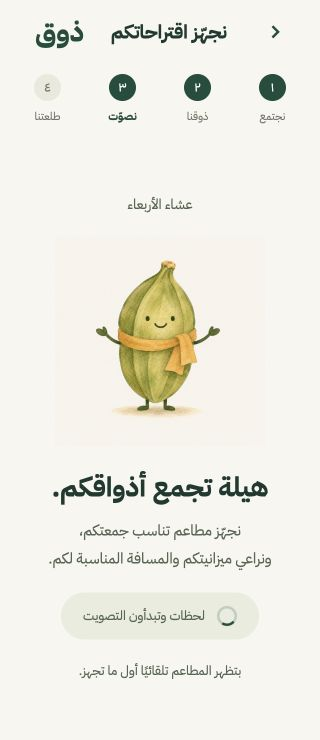
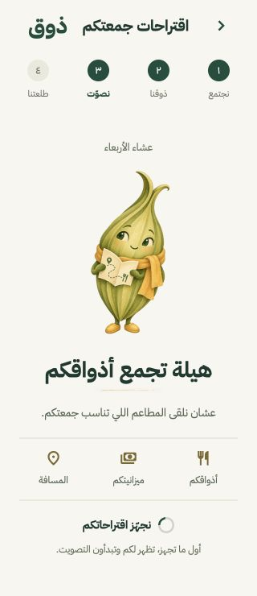

<!doctype html>
<html lang="ar" dir="rtl">
<meta charset="utf-8">
<title>هيلة — مراجعة الشكل والشاشة</title>
<style>
  *{box-sizing:border-box}body{margin:0;background:#e7e8df;color:#193a30;font-family:Arial,sans-serif;padding:20px}main{display:flex;justify-content:center;align-items:flex-start;gap:18px;direction:ltr}figure{margin:0;width:320px;flex:none}figcaption{text-align:center;font-size:15px;line-height:25px;margin-bottom:12px;direction:rtl}img{display:block;width:320px;height:740px;object-fit:contain;background:#f8f6ef;border-radius:12px}figure.character{width:210px}.character img{width:210px;height:350px;padding:20px}.character p{direction:rtl;line-height:1.8;text-align:center;font-size:14px}
</style>
<main>
  <figure class="character"><figcaption>شكل هيلة المدمج</figcaption><p>عيون معبرة وخريطة صغيرة، مع ملمس الألوان المائية والوشاح الذهبي.</p></figure>
  <figure><figcaption>الشاشة السابقة · ٣٢٠ × ٧٤٠</figcaption></figure>
  <figure><figcaption>الشاشة الجديدة · ٣٢٠ × ٧٤٠</figcaption></figure>
</main>
</html>
